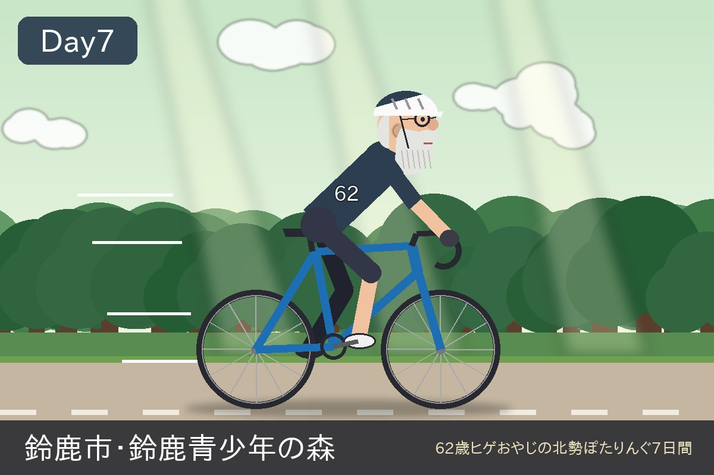

最終日は鈴鹿市の「鈴鹿青少年の森」。たくさんの木々に囲まれた、緑豊かな公園で7日間の締めくくりです。
鈴鹿青少年の森は、広い敷地に林や広場、遊具などがある自然いっぱいの公園。木漏れ日の中を歩くと、それだけで体がほぐれていきます。
桑名の城跡と渡し、四日市の街なかと丘、鈴鹿の池と森。同じ三重県北部でも、公園ごとにまったく違う顔がありました。ゆっくり走るからこそ見える景色が、たくさんありました。
62歳、まだまだ走れます。無理せず、比べず、楽しく。このブログを読んでくださった同年代の皆さんも、ぜひ近所の公園まで自転車でひと漕ぎしてみてください。
それではまた明日。安全運転で、ゆっくり行きましょう。
―― 62歳ヒゲおやじ
#サイクリング #鈴鹿市 #鈴鹿青少年の森 #シニアライフ #公園巡り